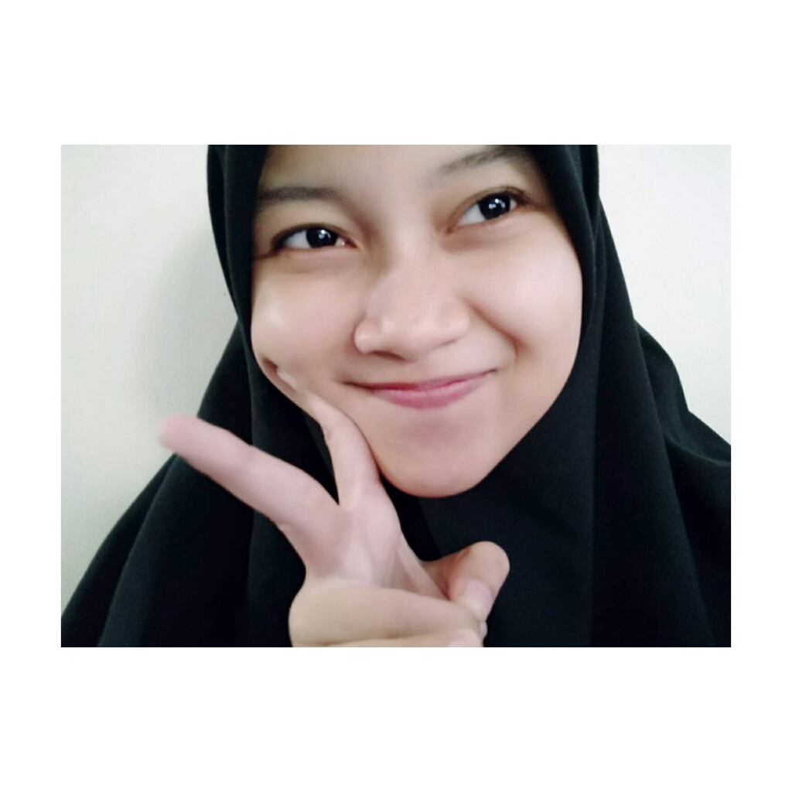
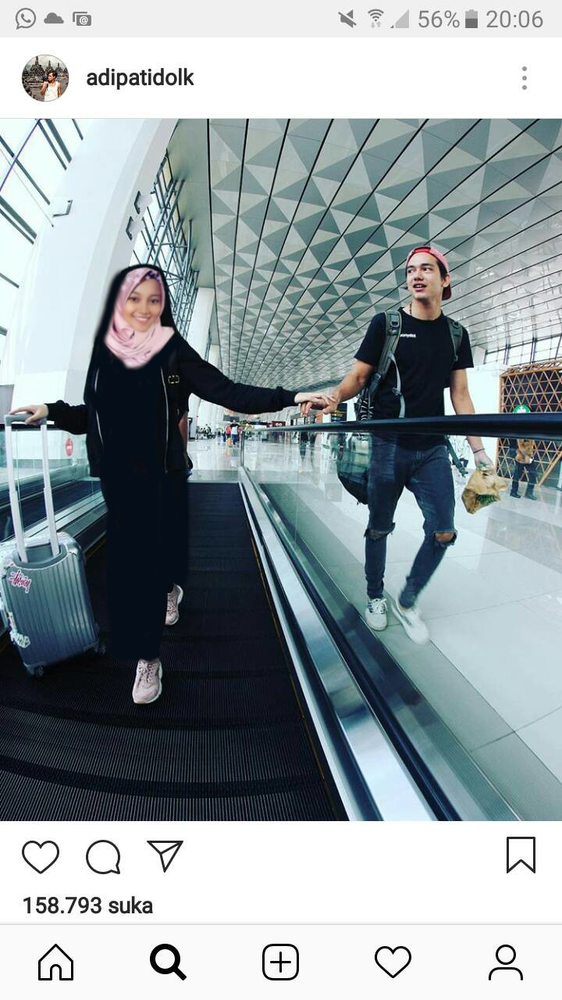
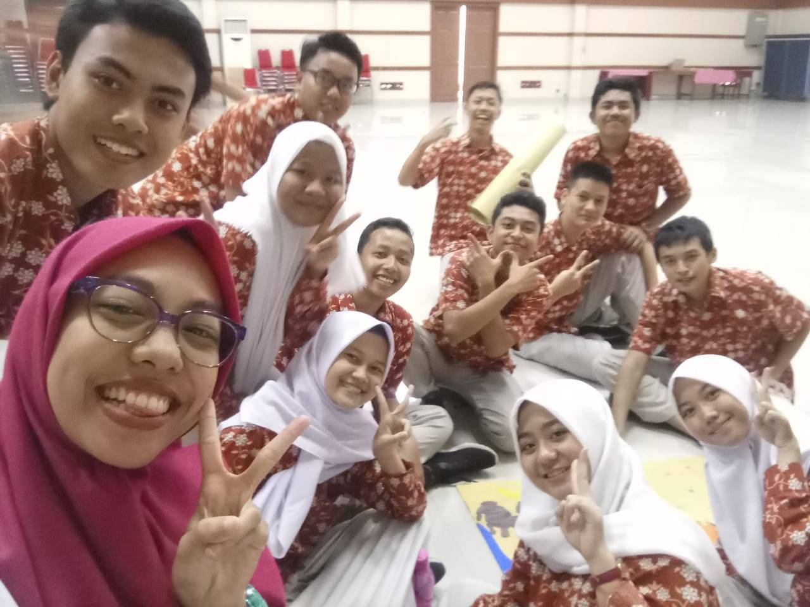
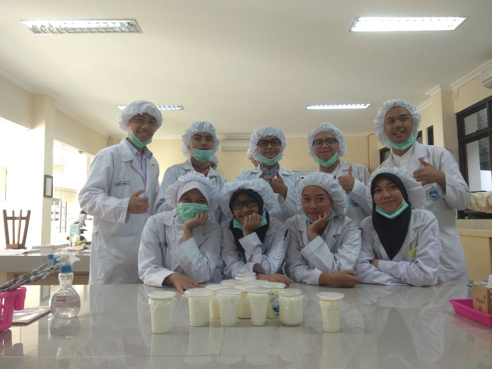

Puja.
Putri Novitasary Hartono.
LA FAMILLE HARTONO'S
Inilah keluarga saya keluarga kecil yang indah dan bahagia , kami berawal dari seorang bidadari yang tuhan turunkan dari surga dan seorang pangeran gagah berani dengan baju besi di badannya serta takwa di hatinya . saya biasa memanggil mereka dengan sebuah mama dan ayah . lalu setelah itu tuhan turunkan cinta di antara bidadari dan pangeran itu hingga lahirlah saya putri novitasary hartono pada tanggal 31 mei 2002 tetapi sebelum saya lahirlah saudari saya yaitu dewi rachma febriany pada tanggl 14 februari 1998 . kami bahagia berada di keluarga yang manis dan humoris serta jenaka . inilah keluarga yang saya miliki dan akan selalu saya banggakan hingga kehidupan yang akan datang.

IDOLE
Aku punya idola ia adalah Adipati Dolken. mengapa aku menyukai adipati dolken karena dia ganteng dan dia ramah terhadap penggemarnya . hal lainnya adalah dia menyukai alam dan laki-laki yang tidak ribet dalam berpakaian . dia mudah bergaul dengan banyak orang dan manis ketika berbicara .
MES COMPÉTENCES
hal yang paling saya sukai adalah mengenai alam . mengapa saya menyukai alam ? karena alam mengajarkan saya untuk terus berusaha tanpa perlu takut adanya masalah . naik gunung atau explore alam adalah kebiasaan yang sudah saya lakukan dari beberapa tahun yang lalu . naik gunung itu sangat menyenangkan . ayo explore alam sama - sama . tapi jangan lupa untuk jaga alam juga yaaa.

Hiking
smile
Photoshop
Love
Smile
Photoshop
Explore
GIF

DES MÉDIAS SOCIAUX
ACTIVITES
Bu Rani. Anak-anak 11-9.
Sedang dalam pelajaran bimbingan konseling (BK).foto diambil sehabis presentasi tentang pohon kehidupan / cita-cita.

Kelompok2 Mikrobiologi.
kegiatan pada saat itu adalah membuat yohurt di laboratorium mikrobiologi.
MES PHOTOS


Contact Me
Bogor
Phone: 0895352511002
Email: pujanovitasary@mail.com
Lets get in touch. Send me a message: